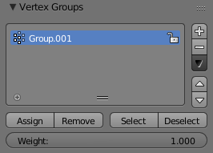

Vertex Groups Panel¶

The Vertex Group Panel.
Vertex Groups are maintained within the Object Data Properties Editor, and there in the Vertex Groups panel.
- Active Vertex Group
-
- Lock
- Locks the group from being edible. You can only rename or delete the group.
- Add
+ - Create a empty vertex group.
- Specials
- Sort Vertex Groups
- Sorts Vertex Groups alphabetically.
- Copy Vertex Group
- Add a Copy of the active Vertex Group as a new Group. The new group will be named like the original group with “_copy” appended at the end of its name. And it will contain associations to exactly the same verts with the exact same weights as in the source vertex group.
- Copy Vertex Groups to Linked
- Copy Vertex Groups of this Mesh to all linked Objects which use the same mesh data (all users of the data).
- Copy Vertex Group to Selected
- Copy all Vertex Groups to other Selected Objects provided they have matching indices (typically this is true for copies of the mesh which are only deformed and not otherwise edited).
- Mirror Vertex Group
- Mirror all Vertex Groups, flip weights and/or names, editing only selected vertices, flipping when both sides are selected; otherwise copy from unselected. Note this function will be reworked (and fully documented) in a future release.
- Remove from All Groups
- (not available for locked groups) Unassigns the selected Vertices from all groups. After this operation has been performed, the verts will no longer be contained in any vertex group.
- Clear Active Group
- Remove all assigned vertices from the active Group. The group is made empty. Note that the vertices may still be assigned to other Vertex Groups of the Object. (not available for locked groups).
- Delete All Groups
- Remove all Vertex Groups from the Object.
- Lock All
- Lock all groups.
- Unlock All
- Unlock all groups.
- Lock_Invert All
- Invert Group Locks.
Editing Vertex Groups¶

Vertex Group Panel in Edit or Weight Paint Mode.
When you switch either to Edit Mode or to Weight Paint Mode Vertex weights can be edited.
The same operations are available in the 3D Views menu
or Ctrl-G.
- Assign
- To assign the Selected vertices to the Group with the weight as defined in the Weight (see below).
- Remove
- To Remove the selected vertices from the Group (and thus also delete their weight values).
- Select
- To Select all vertices contained in the Group.
- Deselect
- To deselect all verts contained in the group.
- Weight
- The weight value that gets assigned to the selected vertices.
提示
Multiple objects sharing the same mesh data have the peculiar property that the group names are stored on the object, but the weights in the mesh. This allows you to name groups differently on each object, but take care because removing a vertex group will remove the group from all objects sharing this mesh.